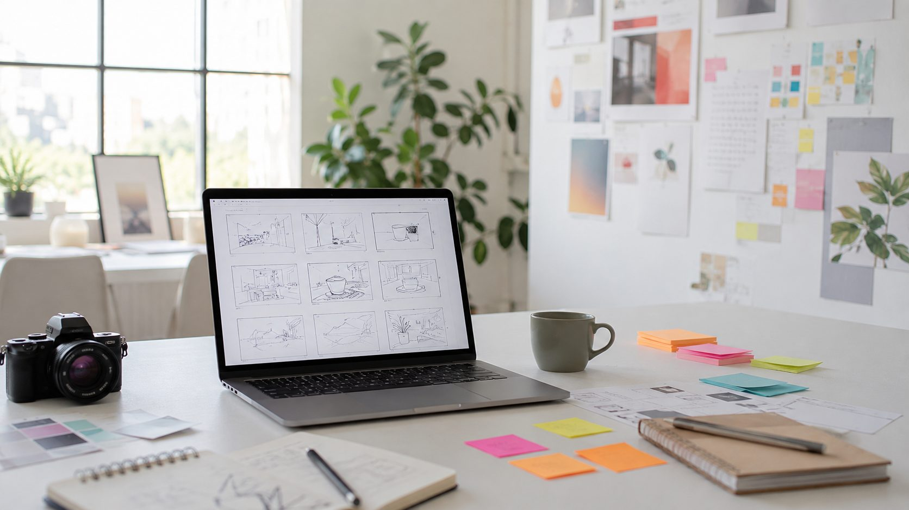
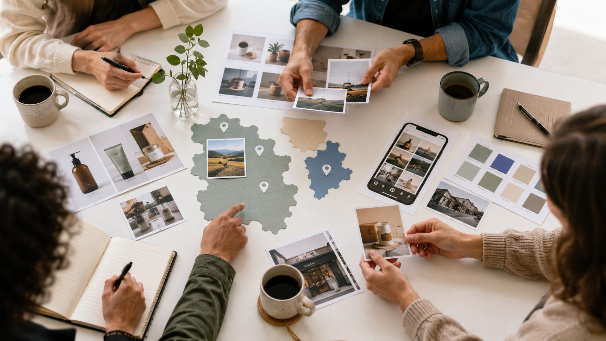
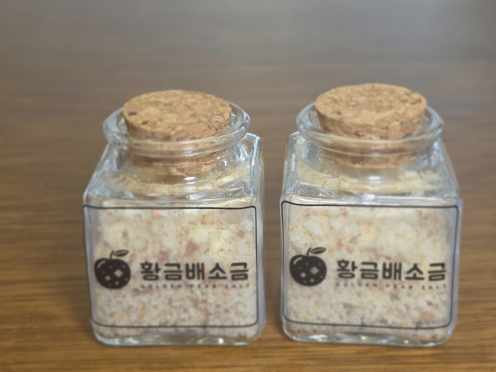
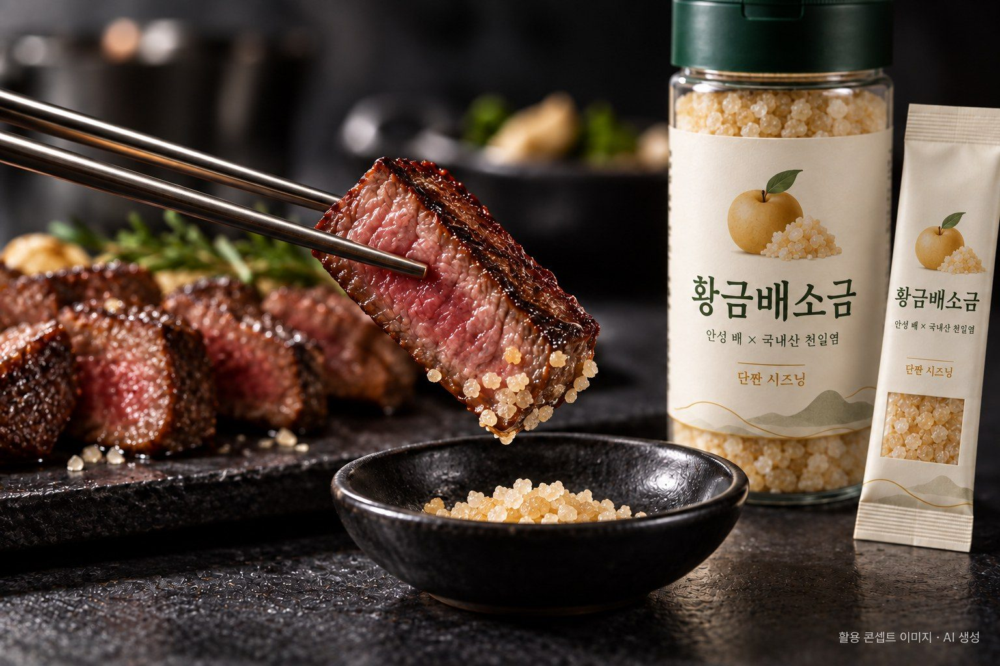
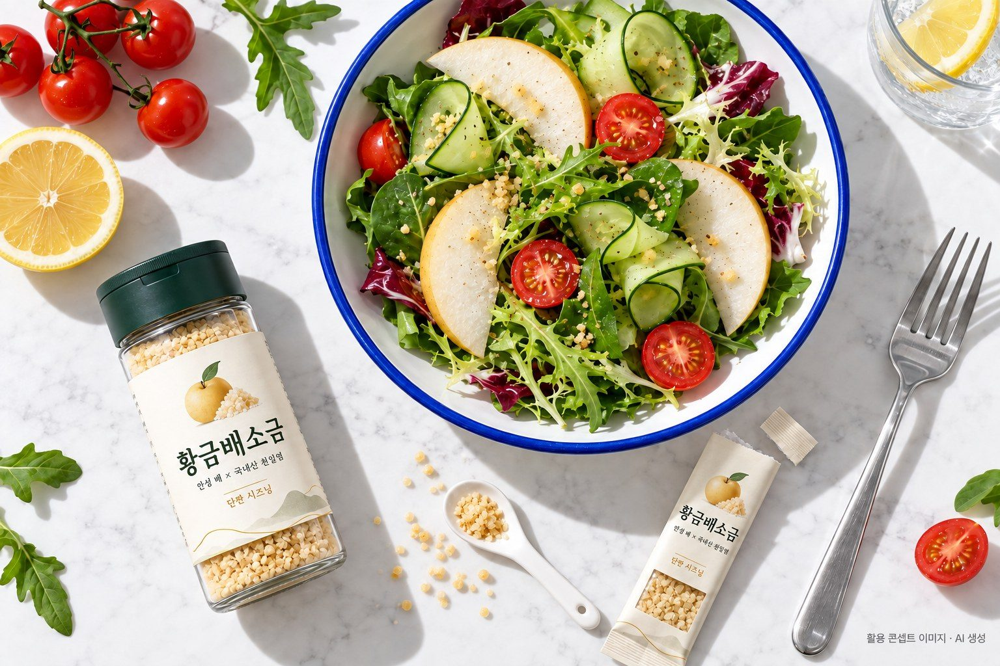
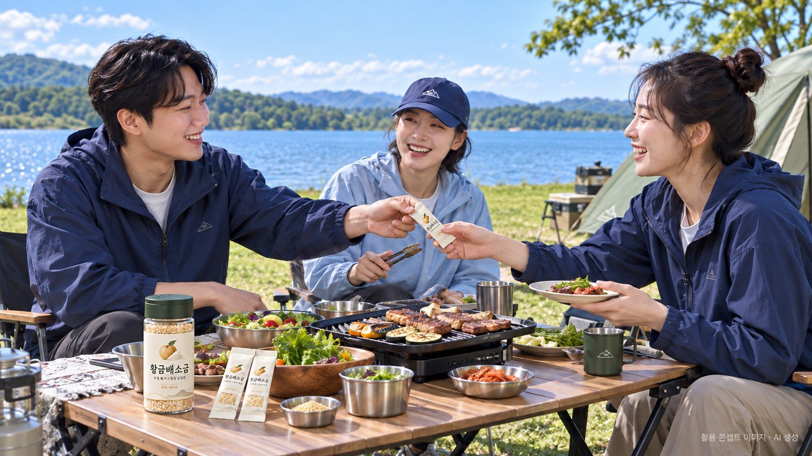
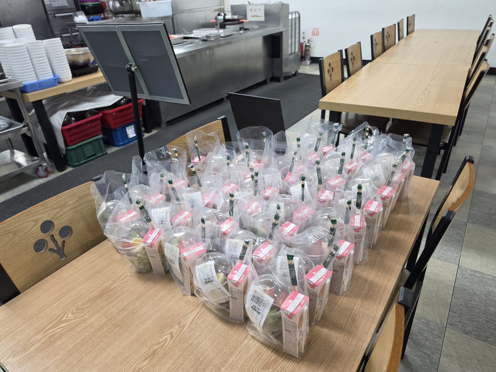

01
DISCOVER
지역을
이해하다.
자원과 사람, 시장의 문제를 먼저 살펴봅니다.
OUR VISION
안성의 기업, 소상공인, 생산자와 창작자가 함께 성장하는 로컬 실행 거점을 지향합니다.
지역에는 좋은 상품과 공간, 자신만의 기술을 가진 사람들이 있습니다. 아지트 안성은 그 가치를 브랜드로 정리하고, 사진과 영상으로 전달하며, 함께할 파트너를 연결합니다.
한 번의 홍보에서 끝나지 않도록 작은 실행과 고객의 반응을 쌓아, 지역 안에서 지속할 수 있는 사업으로 발전시킵니다. 황금배소금은 그 방식으로 만든 첫 제품 프로젝트입니다.
01
DISCOVER
자원과 사람, 시장의 문제를 먼저 살펴봅니다.

02
CREATE
이름, 문장, 사진과 영상으로 고객에게 전합니다.

03
CONNECT
생산자, 기관, 유통과 창작자를 연결합니다.
WHAT WE DO
사진·영상 제작과 AI 활용 역량을 브랜드의 일상적인 운영에 연결합니다.
상품과 가게의 이야기를 고객이 이해할 수 있는 이름, 소개문, 사진과 영상으로 만듭니다.
꾸준히 이어가기 어려운 홍보 업무를 정리하고, 각 브랜드에 맞는 운영 방식을 설계합니다.
지역 기업, 상권, 기관과 창작자가 함께할 주제를 찾아 공동 프로젝트를 기획합니다.
브랜드 시작콘텐츠 개선월간 운영지역 공동 프로젝트
OUR FIRST PRODUCT PROJECT
“배가 들어, 맛이 배가 되다.”
안성 배와 신안 천일염을 결합한 요리 소금. 지역의 재료를 일상의 식탁에 연결하는 아지트 안성의 첫 제품입니다.
상표출원 완료 · 출시 준비 중

지역 농산물의 새로운 쓰임
배와 어울리는 간수의 균형
70℃ 효소 추출 · 80℃ 로스팅
PEAR MEETS SALT
익숙한 두 재료를 간편하게 쓰는 방식으로 바꾸어, 고기 요리부터 샐러드와 캠핑까지 쓰임을 넓혀갑니다.
짠맛은 낮추고 배의 향과 감칠맛을 남겨, 요리에 마지막 한 번 뿌리는 시즈닝으로 만들었습니다. 입자는 거칠지 않게 정리하고, 뭉침과 수분을 잡아 오래 두어도 쓰기 좋게 다듬었습니다.
실제 제작한 시제품은 유리병(나무 스푼형), 코르크 마개 미니 사각병, 스틱 포장 2종, 도자기 종지로 구성했습니다. 용량과 가격, 최종 포장은 제조 준비와 원가 산정에 따라 확정합니다.
현재는 배합과 입자, 뭉침을 개선하는 단계입니다. 저염·연육 같은 기능은 검증된 제품 효능으로 안내하지 않습니다.




AT THE TABLE
고기의 한 점에, 샐러드에 조금씩. 마지막 한 번 뿌리는 소금으로 쓰임을 넓혀갑니다.

구운 고기와 함께 즐기는 단짠 요리 소금.
AI 활용 콘셉트
취향에 맞게 간을 조절하는 활용 제안.
AI 활용 콘셉트
병과 휴대용 스틱으로 간편하게.
AI 활용 콘셉트 · 포장 개발안STANDARD PROCESS
같은 맛이 반복되도록 공정을 여섯 단계로 나누고, 단계마다 온도와 수분을 기록합니다. 표준 레시피 공정표(Rev. 2.1)로 관리합니다.
안성 배를 씻어 껍질과 씨를 정리하고 과육만 분리합니다.
열을 올리지 않고 천천히 짜서 생배즙과 슬러지를 나눕니다.
남은 과육을 급속 저온 건조해 향을 지키며 수분을 뺍니다.
생배즙을 5~6회 나누어 천일염에 코팅하고, 70℃에서 성분을 추출합니다.
코팅한 소금을 80℃에서 로스팅해 풍미를 올리고 입자를 안정시킵니다.
건조 슬러지 분말과 섞어 세라믹 그라인더로 갈아 수분 3% 이하로 마무리합니다.
TASTING & FEEDBACK
7월의 첫 시식에서 11월 급식 연계 시식회까지, 두 번의 자리에서 46명이 맛을 봤습니다.
100%
‘신선하다’ 응답 · 참여 6명 전원
짠맛이 순간적으로 강하다는 의견과 입자가 크다는 지적을 받아 배합과 입자를 다시 다듬었습니다.
직원 40명 대상 저녁 급식과 연계한 시식회. 샐러드와 함께 나눠 드리고 설문을 받았습니다.
신선도 평가 설문 25명 최종
출시 시 구매 의사
응답 25명 중 24명
IN THEIR WORDS
시식회 설문 서술형 응답에서 나온 문장입니다. 응답자 구성은 남 60% · 여 40%였습니다.



WORK IN PROGRESS
안성 배의 새로운 쓰임에서 출발해 모두의 창업 1기에 지원했습니다. 차별성과 수익 모델에 대한 피드백을 사업 구체화의 출발점으로 삼았습니다.
안성시 사회적경제 창업교육에 참여하고, 온라인 멘토링과 경기 재도전 멘토링을 통해 사업 방향을 점검했습니다.
직접 만든 초기 시제품으로 시식회를 열었습니다. 참여한 6명 전원이 ‘신선하다’고 답했고, 짠맛과 입자에 대한 의견을 개선 과제로 정리했습니다.
11월 12일 ‘황금배소금’ 상표를 출원했고, 재무와 유통을 맡을 팀원이 합류했습니다. 11월 18일 (주)삼화 구내식당에서 직원 40명을 대상으로 시식회를 열어 구매 의사 96%를 확인했습니다.
용량과 포장을 확정해 정식 출시를 준비합니다. 지역 소상공인과 급식·유통 파트너를 중심으로 판로를 넓혀갑니다.
TEAM & BRAND
제품을 만드는 사람과 숫자를 보는 사람, 시장을 여는 사람이 함께 움직입니다.
TRADEMARK
상표 ‘황금배소금’
대표 · 제품과 브랜드
한경대학교 농촌공학과 졸업. 배와 소금의 배합, 표준 공정, 브랜드 전반을 맡습니다.
재무 · 회계
원가와 자금 흐름을 관리합니다. 시식회와 현장 운영에도 함께합니다.
개발 · 유통 · 판로
한경대학교 식품공학과 전공, 현 해피푸드 다은 영업이사. 제품 개발과 급식·유통 판로를 맡습니다.
FILMS
회사의 방향, 제품의 배경, 그리고 식탁에서의 쓰임을 담았습니다.
아이디어, 실제 초기 시제품, 개발 방향과 지역 협업 계획.
가상 인물과 포장 개발안으로 제작한 활용 콘셉트 영상입니다.
GROW TOGETHER
생산자의 재료, 가게의 이야기, 창작자의 시선. 각자의 강점이 만나 새로운 사업이 됩니다.
제품 구매·납품, 공동 프로젝트, 취재 문의를 모두 받습니다. 남겨 주신 내용은 확인 후 순차적으로 답변드립니다.